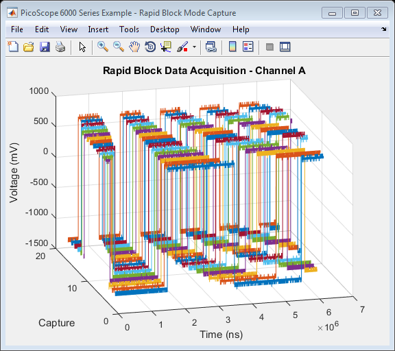

PicoScope 6000 Series Instrument Driver Oscilloscope Rapid Block Data Capture Example
This is an example of an instrument control session using a device object. The instrument control session comprises all the steps you are likely to take when communicating with your instrument.
These steps are:
- Create a device object
- Connect to the instrument
- Configure properties
- Invoke functions
- Disconnect from the instrument
To run the instrument control session, type the name of the file, PS6000_ID_Rapid_Block_Plot3D_Example, at the MATLAB command prompt.
The file, PS6000_ID_RAPID_BLOCK_PLOT3D.M must be on your MATLAB PATH. For additional information on setting your MATLAB PATH, type 'help addpath' at the MATLAB command prompt.
Example: PS6000_ID_Rapid_Block_Plot3D_Example;
Description: Demonstrates how to set properties and call functions in order to capture data in rapid block mode from a PicoScope 6000 Series Oscilloscope.
Copyright: © 2014 - 2015 Pico Technology Ltd. All rights reserved.
Contents
Suggested Input Test Signal
This example was published using the following test signal:
- Channel A: 4Vpp Swept square wave (Start: 50Hz, Stop: 1kHz, Sweep type: Up, Increment: 50Hz, Increment Time: 10ms)
Clear Command Window and Close any Figures
clc;
close all;
Load Configuration Information
PS6000Config;
Device Connection
% Create a device object. % The serial number can be specified as a second input parameter. ps6000DeviceObj = icdevice('picotech_ps6000_generic.mdd'); % Connect device object to hardware. connect(ps6000DeviceObj);
Copyright © 2014 - 2015 Pico Technology Ltd. All rights reserved.
PicoScope 6000 Series MATLAB Instrument Driver
Warning: No units found.
Opening PicoScope 6000 Series device...
Instrument Device Object Using Driver : picotech_ps6000_generic.mdd
Instrument Information
Type: Oscilloscope
Manufacturer: Pico Technology Ltd.
Model: PicoScope 6000 Series
Driver Information
DriverType: MATLAB generic
DriverName: picotech_ps6000_generic.mdd
DriverVersion: 1.2.10
Communication State
Status: open
Setting Device Parameters...
Default Channel Setup:-
-----------------------
ChannelA:-
Enabled: True
Coupling: DC
Range:5V
Analogue Offset: 0.0V
Bandwidth: Full
ChannelB:-
Enabled: True
Coupling: DC
Range:5V
Analogue Offset: 0.0V
Bandwidth: Full
ChannelC:-
Enabled: True
Coupling: DC
Range:5V
Analogue Offset: 0.0V
Bandwidth: Full
ChannelD:-
Enabled: True
Coupling: DC
Range:5V
Analogue Offset: 0.0V
Bandwidth: Full
Turning off Equivalent Time Sampling...
Turning off trigger...
Default Block mode parameters:-
Timebase index : 161
Time Interval: 1004.8 ns
Number of pre-trigger samples: 0
Number of post-trigger samples: 1000000
Total number of samples: 1000000
Default Streaming mode parameters:-
Streaming interval: 1.00e-06 s
Streaming auto stop: 1
Default Signal generator parameters:-
Start frequency: 1000 Hz
Stop frequency: 1000 Hz
Offset voltage: 0 mV
Peak to Peak voltage: 2000 mV
Initialisation complete.
Connected to PicoScope 6000 Series device:-
Instrument Model: 6404D
Batch/Serial Number: CQ186/036
Analogue Channels: 4
Bandwidth: 500 MHz
Buffer memory: 2048 MS
Maximum sampling rate: 5 GS/s
Signal Generator Type: Arbitrary Waveform Generator
Set Channels
Default driver settings applied to channels are listed below - use ps6000SetChannel to turn channels on or off and set voltage ranges, coupling, analogue offset and bandwidth.
% In this example, data is only collected on Channel A so default settings % are used and Channels B, C and D are switched off. % Channels : 1 - 3 (ps6000Enuminfo.enPS6000Channel.PS6000_CHANNEL_B - PS6000_CHANNEL_D) % Enabled : 0 % Type : 1 (ps6000Enuminfo.enPS6000Coupling.PS6000_DC_1M) % Range : 8 (ps6000Enuminfo.enPS6000Range.PS6000_5V) % Analogue Offset: 0.0 % Bandwidtht : 0 (ps6000Enuminfo.enPS6000BandwidthLimiter.PS6000_BW_FULL) % Execute device object function(s). [status.setChB] = invoke(ps6000DeviceObj, 'ps6000SetChannel', 1, 0, 1, 8, 0.0,0); [status.setChC] = invoke(ps6000DeviceObj, 'ps6000SetChannel', 2, 0, 1, 8, 0.0,0); [status.setChD] = invoke(ps6000DeviceObj, 'ps6000SetChannel', 3, 0, 1, 8, 0.0,0);
Set Memory Segments
Configure the number of memory segments and query ps6000GetMaxSegments to find the maximum number of samples for each segment.
% nSegments : 128 [status.memorySegments, nMaxSamples] = invoke(ps6000DeviceObj, 'ps6000MemorySegments', 128); % Set the number of pre- and post-trigger samples to collect. Ensure that the % total does not exceeed nMaxSamples above. set(ps6000DeviceObj, 'numPreTriggerSamples', 2500); set(ps6000DeviceObj, 'numPostTriggerSamples', 7500);
Verify Timebase Index and Maximum Number of Samples
Use ps6000GetTimebase2 to query the driver as to suitability of using a particular timebase index and the maximum number of samples available in the segment selected (the buffer memory has not been segmented in this example) then set the 'timebase' property if required.
To use the fastest sampling interval possible, set one analogue channel and turn off all other channels.
Use a while loop to query the function until the status indicates that a valid timebase index has been selected. In this example, the timebase index of 101 is valid.
% Initial call to ps6000GetTimebase2 with parameters: % timebase : 101 (621ns) % segment index : 0 status.getTimebase2 = PicoStatus.PICO_INVALID_TIMEBASE; timebaseIndex = 101; while(status.getTimebase2 == PicoStatus.PICO_INVALID_TIMEBASE) [status.getTimebase2, timeIntNs, maxSamples] = invoke(ps6000DeviceObj, 'ps6000GetTimebase2', timebaseIndex, 0); if(status.getTimebase2 == PicoStatus.PICO_OK) break; else timebaseIndex = timebaseIndex + 1; end end set(ps6000DeviceObj, 'timebase', timebaseIndex);
Set Simple Trigger
Set a trigger on Channel A, with an auto timeout - the default value for delay is used. The trigger will wait for a rising edge through the specified threshold unless the timeout occurs first.
% Trigger properties and functions are located in the Instrument % Driver's Trigger group. triggerGroupObj = get(ps6000DeviceObj, 'Trigger'); triggerGroupObj = triggerGroupObj(1); % Set the autoTriggerMs property in order to automatically trigger the % oscilloscope after 1 second if a trigger event has occurred. Set to 0 to % wait indefinitely for a trigger event. set(triggerGroupObj, 'autoTriggerMs', 1000); % Channel : 0 (ps6000Enuminfo.enPS6000Channel.PS6000_CHANNEL_A) % Threshold : 500 (mV) % Direction : 2 (ps6000Enuminfo.enPS6000ThresholdDirection.PS6000_RISING) [status.setSimpleTrigger] = invoke(triggerGroupObj, 'setSimpleTrigger', 0, 500, 2);
Setup Rapid Block Parameters and Capture Data
Capture a set of data using rapid block mode and retrieve data values for Channel A.
% Rapid Block specific properties and functions are located in the Instrument % Driver's Rapidblock group. rapidBlockGroupObj = get(ps6000DeviceObj, 'Rapidblock'); rapidBlockGroupObj = rapidBlockGroupObj(1); % Set the number of waveforms to captures % nCaptures : 16 numCaptures = 16; [status.setNoOfCaptures] = invoke(rapidBlockGroupObj, 'ps6000SetNoOfCaptures', numCaptures); % Block specific properties and functions are located in the Instrument % Driver's Block group. blockGroupObj = get(ps6000DeviceObj, 'Block'); blockGroupObj = blockGroupObj(1);
This example uses the runBlock function in order to collect a block of data - if other code needs to be executed while waiting for the device to indicate that it is ready, use the ps6000RunBlock function and poll the ps6000IsReady function.
% Capture the blocks of data % segmentIndex : 0 [status.runBlock, timeIndisposedMs] = invoke(blockGroupObj, 'runBlock', 0); % Retrieve Rapid Block Data % numCaptures : 16 % ratio : 1 % ratioMode : 0 (ps6000Enuminfo.enPS6000RatioMode.PS6000_RATIO_MODE_NONE) % Provide additional output arguments for the remaining channels e.g. chB % for Channel B [numSamples, overflow, chA, ~, ~, ~] = invoke(rapidBlockGroupObj, 'getRapidBlockData', numCaptures, 1, 0); % Stop the Device [status.stop] = invoke(ps6000DeviceObj, 'ps6000Stop');
runBlock:- Collecting block of data: Timebase: 101 Pre-trigger samples: 2500 Post-trigger samples: 7500 runBlock: Waiting for device to become ready... runBlock: Device ready. getRapidBlockData: Retrieving data... getRapidBlockData: Converting to milliVolts and assigning to channel array. getRapidBlockData: Data succesfully retrieved.
Process data
Plot data values in 3D showing history.
% Calculate time period over which samples were taken for each waveform. % Use the timeIntNs output from the ps6000GetTimebase2 or calculate it using % the main Programmer's Guide. timeNs = double(timeIntNs) * double(0:numSamples - 1); % Channel A figure1 = figure('Name','PicoScope 6000 Series Example - Rapid Block Mode Capture', ... 'NumberTitle', 'off'); axes1 = axes('Parent', figure1); view(axes1,[-15 24]); grid(axes1,'on'); hold(axes1,'all'); for i = 1:numCaptures plot3(timeNs, i * (ones(numSamples, 1)), chA(:, i)); end title('Rapid Block Data Acquisition - Channel A'); xlabel('Time (ns)'); ylabel('Capture'); zlabel('Voltage (mV)'); hold off;
Disconnect Device
Disconnect device object from hardware.
disconnect(ps6000DeviceObj); delete(ps6000DeviceObj);
Connection to PicoScope 6404D with serial number CQ186/036 closed successfully. Libraries unloaded successfully.